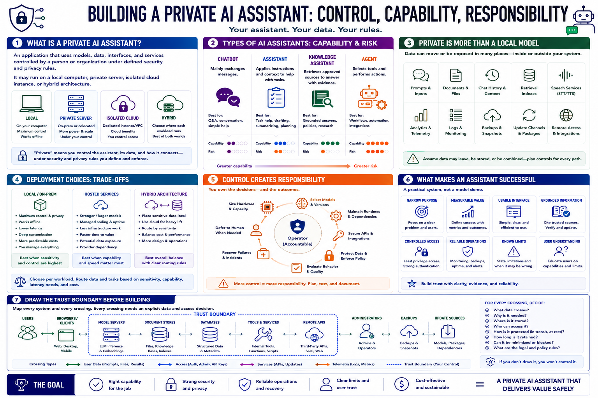

What Is a Private AI Assistant?
Connecting to LMS... Progress: in progress

Narration
A private AI assistant is an application that uses models, data, interfaces, and services controlled by a person or organization under defined security and privacy rules. It may run on a local computer, private server, isolated cloud instance, or hybrid architecture.
A chatbot mainly exchanges messages. An assistant applies instructions and context to help with tasks. A knowledge assistant retrieves approved sources. An agent can select tools and perform actions, creating greater capability and greater risk.
Private does not simply mean the model file is local. Prompts, documents, chat history, retrieval indexes, speech services, analytics, logs, backups, update channels, and remote access can all move or expose data.
Local systems can improve control, offline capability, latency, customization, and cost predictability. Hosted services may offer stronger models, managed scaling, and less infrastructure work. Hybrid systems can route workloads according to sensitivity and capability.
Control creates responsibility. The operator must size hardware, select models, maintain runtimes, secure APIs, protect data, evaluate behavior, recover failures, and decide when the assistant should defer to a human.
A successful assistant is a practical system, not a model demo. It has a narrow purpose, measurable value, usable interface, grounded information, controlled access, reliable operations, and limits that users understand.
Draw the trust boundary before building. Mark users, browsers, model servers, document stores, databases, tools, remote APIs, administrators, backups, and update sources. Every crossing needs an explicit data and access decision.